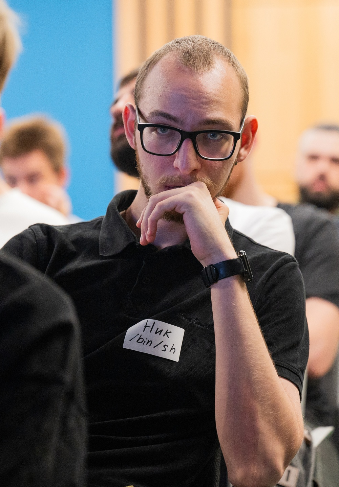
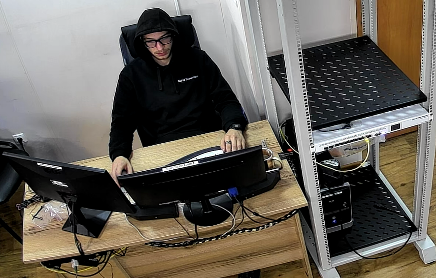
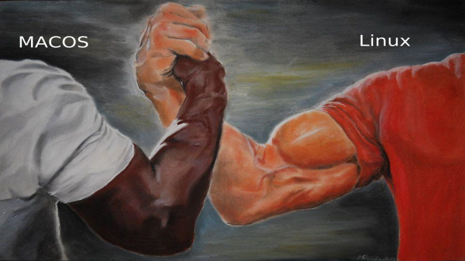
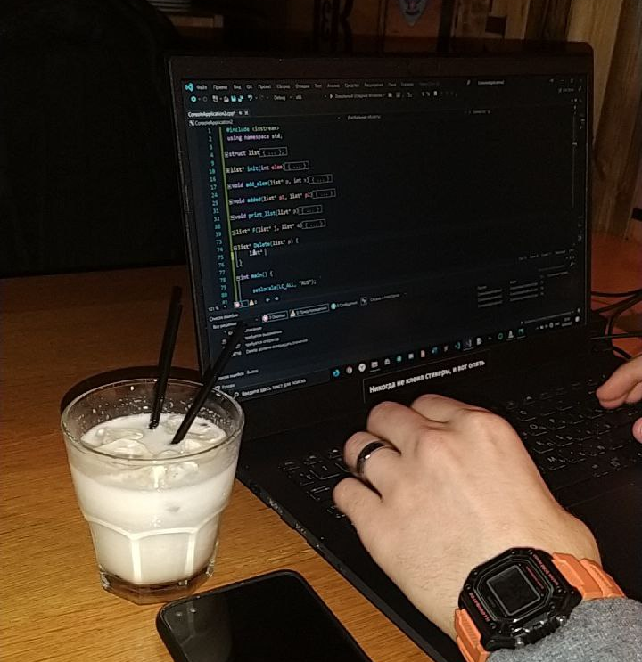

About

I'm a junior DevOps engineer. My technology stack:
- I have experience with Debian [9-12], Arch, Fedora [36-40], TrueNas, FreeBSD, Astra Linux 1.[6-8];
- I know how to configure routers Mikrotik;
- I know how to write automated scripts in sh/bash and Python;
- I work with configuration management tools (BundleWrap, Ansible);
- I have Zabbix (Server, Agent, Proxy) and Prometheus+Grafana configuration skills;
- I configure the ELK stack;
- I know how to configure nginx;
career

0
From July 2022 to February 2023 I worked at the university, in the network operations department.
My responsibilities:
- Administration of server/office hardware and software;
- Information security and hygiene issues;
- Design and installation of local area network;
I
Since February 2023 to November 2024 I worked at the IT company DevLine as a Linux administrator/DevOps engineer.
My responsibilities:
- Administration of Debian-based servers;
- Administration of Mikrotik network hardware;
- Network infrastructure health support (routing, NAT, protocols, etc.);
- Organization of monitoring and alerting (smartd, nut, Zabbix);
- Writing Python and Bash scripts;
- Working with the configuration management system (BundleWrap);
- Incident response and remediation;
- Build and install server/telecommunications equipment;
II
Since April 2024 I've been working at army of Russia
My responsibilities:
- Administration of Astra Linux-based server/office hardware and software;
- Information security and hygiene issues;
- Design and installation of local area network;
↞ About
Speeches ↠
speeches

↞ Career
↠i Projects
projects

Here're URLs on my projects ᕦʕ•ᴥ•ʔᕤ
↞ Speeches
↠ Contacts
contacts
↞ Projects
↠ About